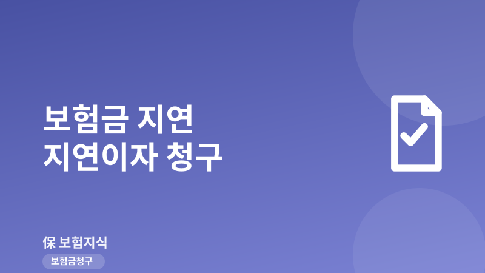
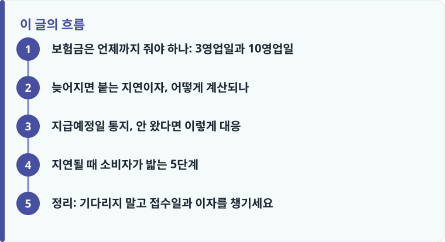

보험금은 청구 서류 접수일부터 3영업일 이내 지급이 원칙이며, 조사·확인이 필요해도 10영업일을 넘기면 그 기간에 대해 지연이자를 가산해 지급해야 합니다.
조사가 길어지면 보험사는 지급예정일과 구체적 사유를 문자·앱·서면으로 통지해야 합니다. 통지가 없거나 사유가 막연하면 지연이자를 요구할 근거가 됩니다.
지연이자는 따로 청구하지 않아도 원칙적으로 가산되지만, 실제 지급내역서에서 이자 항목이 빠지는 경우가 있으므로 반드시 확인해야 합니다.
보험금은 언제까지 줘야 하나: 3영업일과 10영업일
보험금 청구를 해 두고 며칠, 몇 주가 지나도 입금 소식이 없으면 답답할 수밖에 없습니다. 그런데 지급 시한은 막연한 것이 아니라 표준약관에 숫자로 정해져 있습니다. 보험사는 보험금 청구에 필요한 서류를 접수한 날부터 3영업일 이내에 보험금을 지급하는 것이 원칙입니다. 즉 서류가 온전히 갖춰져 접수되었다면 사흘 안에 돈이 나오는 것이 기본값입니다.
다만 지급 사유를 조사하거나 확인해야 하는 경우가 있습니다. 사고 경위 확인, 병력 조회, 손해사정이 필요한 상황이 그렇습니다. 이때는 접수일부터 10영업일 이내에 지급하도록 정해져 있습니다. 여기서 중요한 것은 '영업일'이라는 단어입니다. 주말과 공휴일은 계산에서 빠지므로, 실제 달력으로는 3영업일이 4~5일, 10영업일이 2주 안팎이 될 수 있습니다. 접수일이 언제였는지가 모든 계산의 출발점이므로, 청구할 때 받은 접수증과 접수일자를 반드시 기록해 두어야 합니다.
서류가 부족해 반려되면 시한 계산이 다시 시작되기도 합니다. 그래서 처음 청구할 때 서류를 빠짐없이 갖추는 것이 지연을 막는 가장 확실한 방법입니다. 어떤 서류가 필요한지 헷갈린다면 보험금 청구 서류 체크리스트를 먼저 확인해 접수 단계에서 누락을 줄이는 것이 좋습니다.
늦어지면 붙는 지연이자, 어떻게 계산되나
정해진 시한을 넘기면 보험사는 늦어진 기간에 대해 지연이자, 즉 가산이자를 원래 보험금에 더해서 줘야 합니다. 이는 소비자에게 베푸는 혜택이 아니라 약관상 정해진 의무입니다. 적용 이율은 약관에서 정한 이율을 따르는데, 일반적으로 보험계약대출(약관대출) 이율이나 보험개발원이 공시하는 이율 등이 상황에 따라 쓰입니다. 정당한 사유 없이 지급이 미뤄진 기간이라면 그만큼 이자가 붙는 구조입니다.
금액이 작아 보여도 계산 방식을 알아 두면 감이 잡힙니다. 지연이자는 대략 '지급 보험금 × 연이율 × 지연 일수 ÷ 365'로 계산되는 구조입니다. 예를 들어 보험금 1,000만 원이 약정 지급일보다 30일 늦어졌고 이율을 연 5%로 가정하면, 1,000만 원 × 5% × 30 ÷ 365로 대략 4만 원 안팎이 이자로 붙는 셈입니다. 정확한 금액은 실제 적용 이율과 일수에 따라 달라지므로 여기서는 계산 개념을 보여 주는 예시일 뿐입니다. 다만 지연이 길어지고 보험금이 클수록 이자 규모도 무시하기 어려워집니다.
가장 주의할 점은 지연이자가 소비자가 따로 청구하지 않아도 원칙적으로 가산되지만, 실무에서는 이 항목이 빠진 채 원금만 입금되는 경우가 있다는 것입니다. 그래서 보험금을 받은 뒤에는 지급내역서(지급명세)에서 이자 항목이 포함되었는지 반드시 확인해야 합니다. 시한을 분명히 넘겼는데 이자가 없다면 보험사에 산출 근거를 요청하고, 필요하면 재산정을 요구할 수 있습니다. 청구 자체가 부당하게 거절되거나 삭감된 사례가 궁금하다면 실손 청구 거절 사례도 함께 살펴보면 대응 감각이 생깁니다.
작성·검수 기준
이 글은 특정 보험사나 상품을 겨냥한 것이 아니라, 보험금 지급이 늦어질 때 소비자가 알아야 할 표준약관상 일반 기준과 실제 대응 방법을 설명하기 위해 작성했습니다. 지급 시한, 적용 이율, 지연이자 산정 방식은 가입 시점의 약관과 개별 상품, 사안의 사실관계, 보험회사 심사에 따라 달라질 수 있습니다. 여기 담긴 내용은 일반 정보이며 개별 약관·심사 결과를 대신하지 않습니다.
정확한 지급 시한과 이율은 본인 증권의 약관과 상품설명서에서 확인하는 것이 가장 정확하며, 조사·현장확인 절차가 어떻게 진행되는지는 손해사정·현장조사 대응을 참고하면 이해가 쉽습니다.

지급예정일 통지, 안 왔다면 이렇게 대응
조사나 확인이 길어져 10영업일 안에 지급하기 어려울 때, 보험사는 그냥 침묵해서는 안 됩니다. 표준약관은 이 경우 보험사가 지급예정일을 구체적인 사유와 함께 통지하도록 정하고 있습니다. 통지는 서면뿐 아니라 문자메시지나 모바일 앱 알림 같은 방식으로도 이뤄질 수 있습니다. 핵심은 '왜 늦어지는지'와 '언제까지 처리할 것인지'가 명확히 담겨야 한다는 점입니다.
그래서 지급이 늦어진다면 먼저 지급예정일 통지를 받았는지 확인하세요. 통지가 아예 없거나, '검토 중'처럼 사유가 막연하고 예정일이 없는 경우라면 그 자체가 문제입니다. 정당한 사유 없이 지연되는 기간에는 이자가 가산되어야 하므로, 이런 상황은 소비자가 지연이자를 요구할 근거가 됩니다. 통지를 요청할 때는 통화보다 문자나 앱 메시지처럼 기록이 남는 방식을 활용하고, 담당자 이름과 통화 일시도 메모해 두는 것이 나중에 유리합니다.
지연될 때 소비자가 밟는 5단계
답답한 마음에 기다리기만 하면 오히려 손해입니다. 지연 상황에서는 순서대로 움직이는 것이 효과적입니다. 아래 단계를 따라가면 근거를 쌓으면서 압박 수위를 높일 수 있습니다.
- 청구 시점에 받은 접수증과 접수일자를 확보합니다. 모든 시한 계산의 기준점이므로 가장 먼저 챙깁니다.
- 지급예정일 통지를 요구합니다. 지연 사유와 처리 예정일을 문자·앱 등 기록이 남는 방식으로 받아 둡니다.
- 시한을 넘겼다면 지연이자 가산과 산출 근거를 요청하고, 지급내역서에 이자 항목이 포함됐는지 확인합니다.
- 처리가 계속 지연되면 금융감독원 '1332'에 상담·민원을 접수하고 분쟁조정을 신청합니다.
- 명백한 부지급이나 부당한 지연이라면 금융분쟁조정위원회 조정 절차로 이어 갑니다.
혹시 청구를 하지 않아 아예 잠들어 있는 보험금이 있는지도 이 기회에 점검해 보면 좋습니다. 과거 사고나 계약 만기와 관련해 놓친 돈이 있을 수 있어 숨은 미청구 보험금 찾기를 함께 확인하면 도움이 됩니다.
정리: 기다리지 말고 접수일과 이자를 챙기세요
보험금 지급은 접수 후 3영업일, 조사가 필요해도 10영업일이 원칙이고, 이를 넘기면 지연이자가 붙는 것이 표준약관의 뼈대입니다. 지연이자는 자동으로 가산되어야 하지만 실무에서 누락될 수 있으므로, 접수일을 기록하고 지급예정일 통지를 요구하며 지급내역서의 이자 항목을 확인하는 세 가지만 챙겨도 대응의 절반은 끝납니다. 그래도 진전이 없으면 '1332'와 분쟁조정으로 넘어가면 됩니다.
다른 보험 정보 글이 궁금하다면 보험지식 블로그에서 이어 읽어 보세요. 가입 전에는 반드시 약관과 상품설명서를 확인하는 것이 가장 안전한 방법입니다.